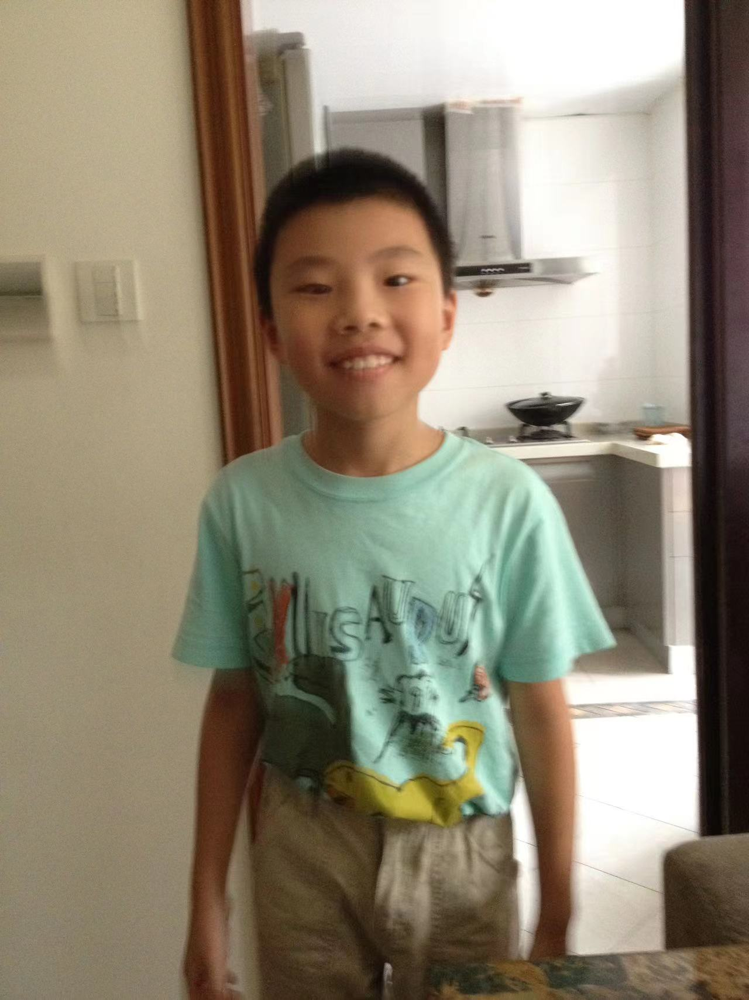

Born in Shanghai in 2004, I spent half of my childhood growing up there. I am deeply marinated with the culture, the tradition, the memories…
Growing up in Shanghai, I've developed a deep love for my city. The people here are incredibly diverse and dynamic, making every interaction a unique experience. I adore the bustling streets, the aromatic food stalls, and the vibrant culture that surrounds me every day.

But what truly makes Shanghai feel like home is the strong bonds I've formed with my family and friends. Together, we've navigated the city's bustling streets, explored its hidden gems, and shared countless memories that I'll cherish forever.
In Shanghai, I've found a sense of belonging and a community that inspires me every day. It's a city that's shaped who I am, and I'm grateful for every moment I get to spend here.
Since a young age, my parents took me to travel around the world during the summer. Seeing the world at such a young age shaped me to become who I am today. Open-minded, curious, inquisitive…
At the age of 13, I started a new life in a suburban town in central New Jersey named Marlboro...